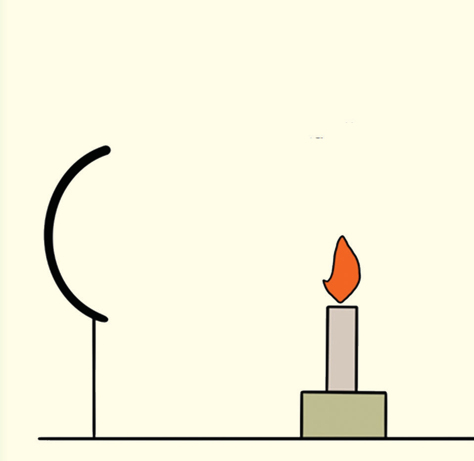

Since the image distance is positive, the image is real.
To find the height of the image, we apply the magnification formula:
Activities 4.10, 4.11 and 4.12 aid in investigating properties that affects image formation on curved mirrors.

Activity 4.10
Procedure
Light the candle and set up the apparatus as shown in Figure 4.31.
Start by placing the lit candle 40 cm from the mirror pole, so the object is beyond the centre of curvature, C.

Adjust the screen’s position until a clear image of the candle flame is formed.
Observe the nature of the image formed.
Note whether it is enlarged, diminished, upright or inverted and record your observation.
Measure the distance between the screen and the mirror.
This corresponds to the image distance; verify the measured image distance by calculating using the mirror equation.
Move the candle to a point 35 cm from the mirror pole and repeat steps 4 and 5.
Repeat step 6 for the candle placed at 30 cm, 25 cm, 15 cm, 10 cm, and 5 cm from the pole of the mirror.
Note that, in some cases, you may have to look in the mirror to see the image.
Record your data in the form of Table 4.5.
Replace the concave mirror with a convex mirror of focal length 15 cm and repeat Steps 4 to 7.